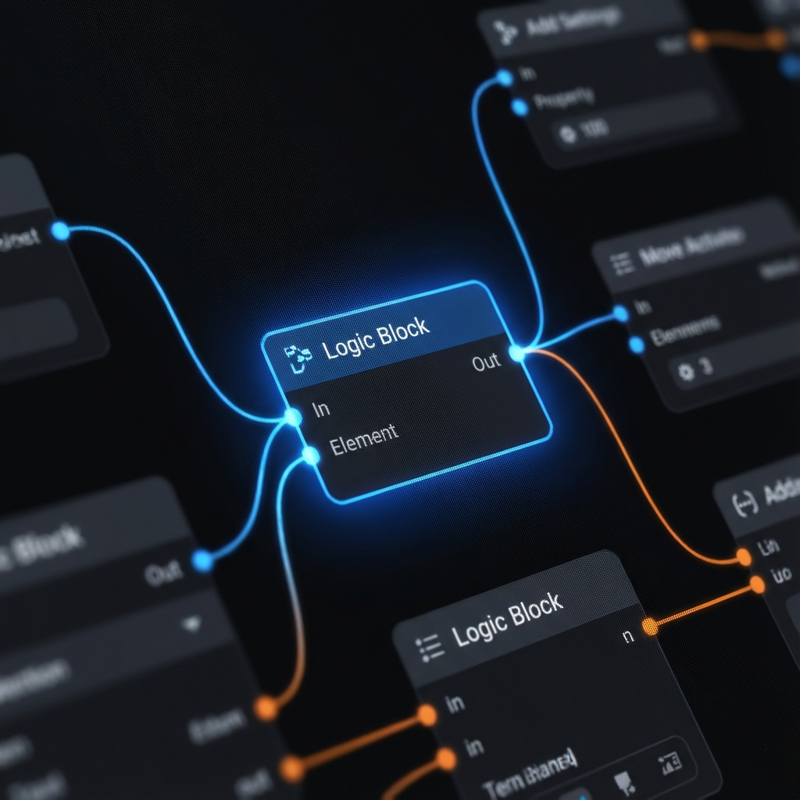
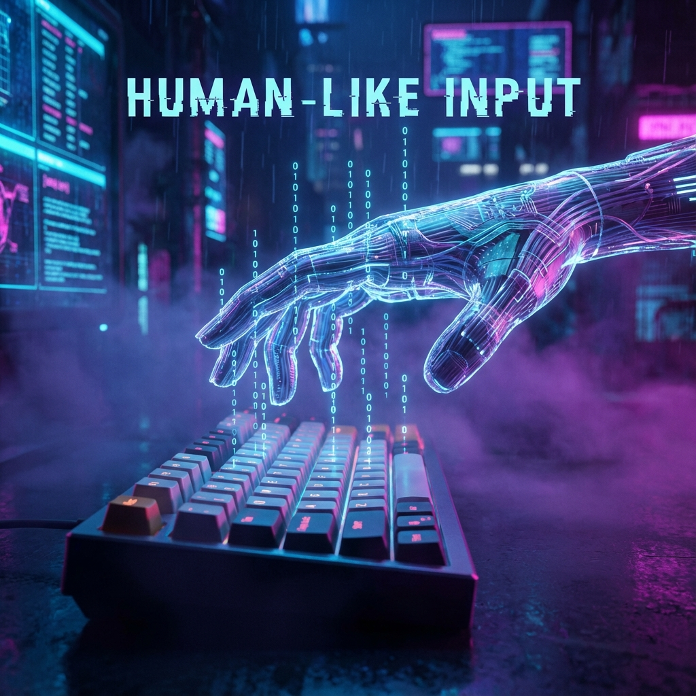

SugarMacro는 딥러닝 비전 기술과 휴먼 라이크 컨트롤을 결합하여, 감지되지 않는 안전하고 강력한 자동화를 제공합니다.
Total Downloads
Uptime Stability
AI Powered
Detection Rate
화면의 픽셀을 찾는 것이 아닙니다. YOLOv11 모델이 몬스터, 아이템, 지형을 실시간으로 인식하여 사람처럼 판단합니다.

복잡한 코딩은 필요 없습니다. 직관적인 노드 에디터에서 흐름을 연결하기만 하면 나만의 로직이 완성됩니다.

기계적인 움직임을 배제합니다. 베지어 곡선(Bezier Curve) 기반의 마우스 이동과 무작위 딜레이로 사람과 구별할 수 없습니다.
하드웨어 레벨의 마우스/키보드 입력 에뮬레이션으로 완벽한 보안을 자랑합니다.